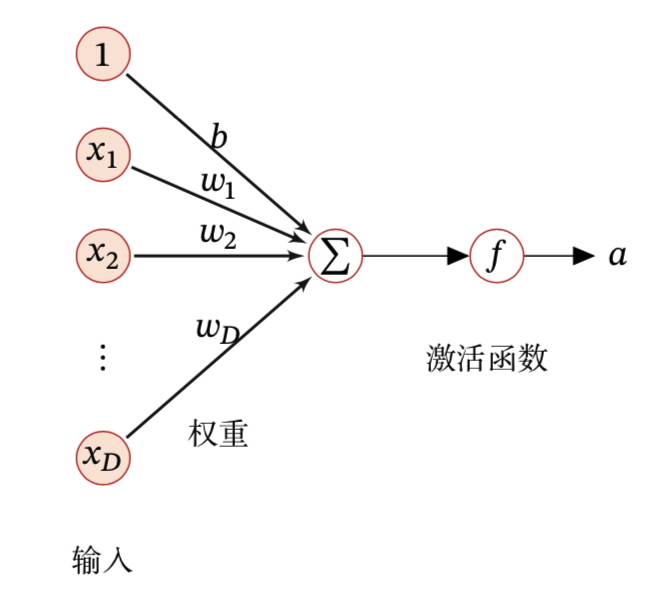
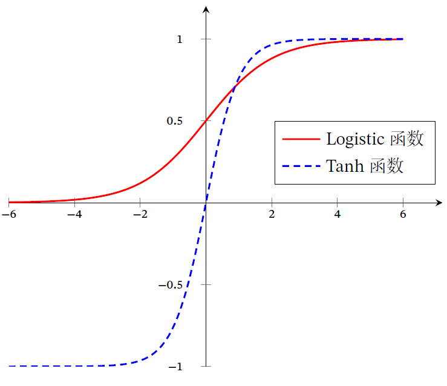
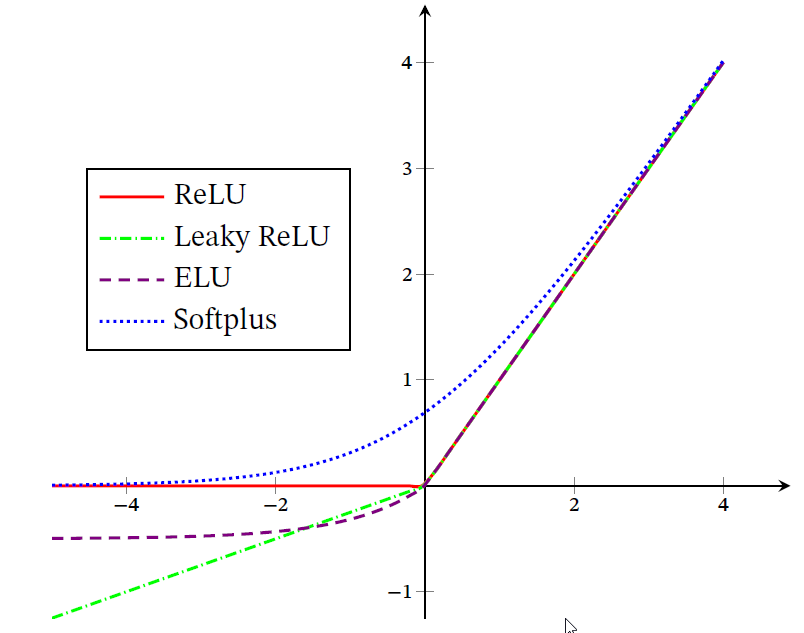

神经网络基础¶
神经元¶
人工神经元（Artifical Neuron）简称神经元（Neuron），是构成神经网络的基本单元，其主要是模拟生物神经元的结构和特性，接收一组输入信号并产生输出。
假设一个神经元接收D个输入x_1,x_2,…,x_D，令向量\boldsymbol{x}=[x_1;x_2;\dots;x_D]来表示这组输入，并用==净输入==z\in \mathbb{R}表示表示一个神经元所获得的净输入信号\textbf{x}的加权和。 $$ z=\sum_{d=1}^{D}w_d x_d+b =\boldsymbol{w}^{\top} \boldsymbol{x}+b $$ 其中\boldsymbol{w}=[w_1;w_2,w_3;\cdots;w_D]\in \mathbb{R}^D是D维的权重向量，b\in\mathbb{R}是偏置。净输入z在经过一个非线性函数f(\cdot)后，得到神经元的活性值a，即 $$ a=f(z) $$ 其中非线性函数f(\cdot)称为 激活函数 。如图所示：

激活函数¶
激活函数在神经网络中非常重要，为了增强网络的表示能力和学习能力，激活函数需要具备以下几点性质：
- 连续并可导（允许少数点上不可导）的非线性函数，可导的激活函数可以直接利用数值优化的方法来学习参数；
- 激活函数及其导函数要尽量的简单，有利于提高网络计算效率；
- 激活函数的导函数的值域要在一个合适的区间内，不能太大也不能太小，否则会影响训练的效率和稳定性。
比较常见的激活函数有：
Sigmoid型函数¶
Sigmoid型函数是指一类S型曲线函数，为两端饱和函数。常用的Sigmoid型函数有Logistic和Tanh函数。
对于函数𝑓(𝑥)，若𝑥 → −∞ 时，其导数f\prime(𝑥) → 0，则称其为左饱和．若𝑥 → +∞ 时，其导数𝑓′(𝑥) → 0，则称其为右饱和．当同时满足左、右饱和时，就称为两端饱和．
如图给出了两者的形状。

(1) Logistic函数¶
Logistic函数的定义为
该函数可以看成是一个“挤压”函数，把一个实数域的输入“挤压”到(0, 1)．当输入值在0 附近时，Sigmoid 型函数近似为线性函数；当输入值靠近两端时，对输入进行抑制．输入越小，越接近于0；输入越大，越接近于1.
这样的特点也和生物神经元类似，对一些输入会产生兴奋（如输出为1），对另一些输入产生抑制（输出为0）。
优点： 1. Logistic函数是连续可导的，具有良好的数学性质，导数为\sigma^{\prime}(x)=\sigma(x)(1-\sigma(x)) 2. Logistic函数的输出映射在(0,1)之间，单调连续，可以直接看作概率分布，使得神经网络更好地和统计学习模型进行结合。
缺点： Logistic函数的输出是恒大于0，非零中心化的输出会使得其后一层的神经元的输入发生偏执转移，并进一步使得梯度下降的收敛速度变慢。
(2) Tanh函数¶
Tanh函数也是一种Sigmoid型函数，其定义为
Tanh函数可以看作放大并平移的Logistic函数，其值域为(-1,1)。
优点： 1. Tanh函数对比Sigmoid函数收敛速度更快； 2. Tanh函数的输出是零中心化的。
缺点： Tanh函数并没有改变Sigmoid型函数由于饱和性而带来的梯度消失。
ReLU函数¶
ReLU函数是目前深度神经网络中经常使用的激活函数，ReLU函数实际上是一个斜坡函数，定义为
优点： 1. ReLU函数只需要进行简单的加、乘和比较运算，计算上更加高效； 2. Sigmoid型函数会导致一个非稀疏的神经网络，而ReLU却具有很好的稀疏性，大约50%的神经元会处于激活状态； 3. ReLU函数为左饱和函数，且在x \gt 0时导数为1，在一定程度上缓解了神经网络的梯度消失问题，加速梯度下降的收敛速度
缺点： 1. ReLU函数的输出是非零中心化的，给后一层的神经网络引入偏置转移，会影响梯度下降的效率； 2. ReLU函数元在训练过程中比较容易出现神经元“死亡”
在训练时，如果参数在一次不恰当的更新后，第一个隐藏层中的某个ReLU 神经元在所有的训练数据上都不能被激活， 那么这个神经元自身参数的梯度永远都会是0，在以后的训练过程中永远不能被激活． 这种现象称为死亡ReLU问题，并且也有可能会发生在其他隐藏层．
在实际使用中，为了避免上述情况，有几种ReLU的变种也会被广泛使用。
(1) LReLU函数¶
带泄露的ReLU（Leaky ReLU）在输入x<0时，保持一个很小的梯度\gamma，这样当神经元非激活时也能有一个非零的梯度可以更新参数，避免永远不能被激活。
带泄露的定义如下
其中\gamma是一个很小的常数，如0.01。当\gamma < 1时，带泄露的ReLU也可以写为
相当于一个比较简单的maxout单元。
(2) PReLU函数¶
带参数的ReLU引入一个可学习的参数，不同神经元可以有不同的参数，对于第i个神经元，其PReLU的定义为
其中\gamma_i为x\le 0时函数的斜率。因此，PReLU是非饱和函数，．如果\gamma_i =0，那么 PReLU 就退化为ReLU．如果\gamma_i为一个很小的常数，则PReLU 可以看作带泄露的 ReLU．PReLU 可以允许不同神经元具有不同的参数，也可以一组神经元共享一 个参数．
(3) ELU函数¶
ELU函数是一个近似的零中心化的非线性函数，其定义为
其中\gamma \ge 0是一个超参数，决定x \le 0 时的饱和曲线，并调整输出均值在0 附近
(4) Softplus函数¶
Softplus函数可以看作Rectifier 函数的平滑版本，其定义为
Softplus函数其导数刚好是Logistic函数，Softplus函数虽然也具有单侧抑制、宽兴奋边界的特性，却没有稀疏激活性．
图中显示了ReLU、LeakyReLU、ELU以及Softplus函数的示例 
Maxout单元¶
Maxout单元也是一种分段线性函数，Sigmoid型函数、ReLU等激活函数的输入时神经元的净输入z，是一个标量。 而Maxout单元的输入时上一层神经元的全部原始输出。是一个向量\boldsymbol{x}=[x_1;x_2;\cdots;x_D].
每个Maxout单元有K个权重向量\boldsymbol{w}_k \in \mathbb{R}^D和偏置b_k(1\le k \le K).对于输入\boldsymbol{x}， 可以得到K个净输入z_k(1\le k \le K).
其中\boldsymbol{w}_k=[w_{k,1},w_{k,2},\cdots,w_{k,D}]^\top为第k个权重向量。 Maxout单元的非线性函数定义为
Maxout单元不单是净输入到输出之间的非线性映射，而是整体学习输入到输出之间的非线性映射关系． Maxout激活函数可以看作任意凸函数的分段线性近似，并且在有限的点上是不可微的．